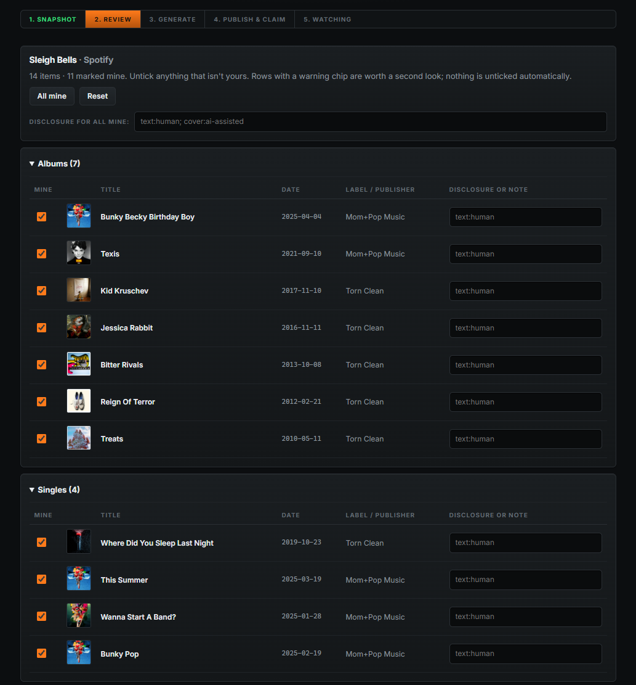
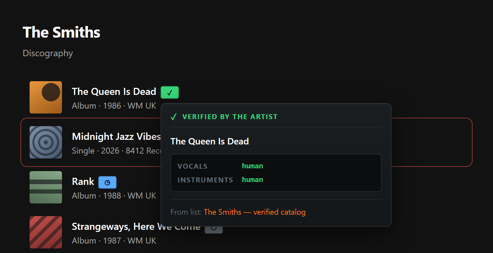

For artists, authors, and anyone tired of it
Sloppycat checks your Spotify, Apple Music, Deezer, Amazon and Goodreads profiles on a timer, and tells you when a release turns up that isn't yours. Then it writes the takedown. Everyone else can subscribe to lists of what artists say is actually theirs, so the fakes get marked on the page before anyone presses play or buys a copy.
Here's how the junk gets there. Someone runs a track through an AI, signs up with a cheap distributor, and tells them it's yours. Nobody checks. It shows up next to your real records and the royalties go to them. Your fans think it's you. Same trick with books, except it's your name on a knockoff, or a title one word off yours.
No detector knows your catalog. You do. So it asks you instead, one time, and then it watches the page for you. Most weeks you won't hear from it, which is sort of the point.
Open your own artist or author page and press the button. It reads what's on there the same way anyone else's browser would, and everything starts ticked as yours. You untick the things that aren't. Nothing gets unticked for you, because a guess about your own catalog is worse than no guess at all.
Odd items get a note about what looked off, usually a label you've never heard of on something that turned up last week. That's a reason to look. It isn't proof of anything, and plenty of honest releases have one.

Subscribe to an artist's list, or to the community one, the same way you subscribe to filter lists in an ad blocker. Their stuff gets a small mark on the page, and hovering it tells you who said what and when.
No mark means no list covers it yet. You get nothing instead of a guess, which I think is the right way round. The blocker side is experimental and off until you turn it on, and it only works in the web player and on the sites themselves, not the desktop app and not your phone.

That's the whole format. One file, put anywhere that gives you an address, and a gist takes about a minute. Anyone can read it without installing a thing, and if it's wrong they can send a pull request instead of emailing me and waiting a week.
Like an ad blocker, this only does anything if the people who own the catalogs publish the lists.
If you run a label, manage artists, or do this for a living as a lawyer: you already have this data. It's what your DDEX feed tells the platforms, or your ONIX feed if you do books, down to the ISRCs and the UPCs. What nobody publishes is a version of it a browser can check, which is a decent part of why this works as well as it does.
Put every artist's profile in one list and publish it once. There's no fee, no application and nothing to sign, because there's nobody in the middle and nothing here to sell.
Submitted, not approved yet, so there's no install link. For now you build it and load the folder
yourself. Chrome, developer mode, load unpacked, point it at dist. Firefox once the
Chrome one stops moving around.
tl;dr: people upload AI slop under other people's names and the platforms wave it through. You snapshot your own profile, untick what isn't yours, and it watches the page and writes your takedown letters. Everyone else can subscribe to your list and see the junk marked before they press play. It doesn't fix the hole. It does mean you find out in an hour instead of whenever a fan gets round to emailing you.